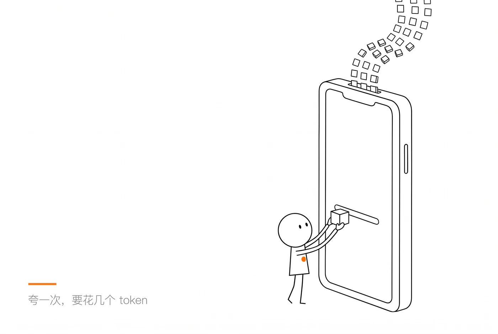
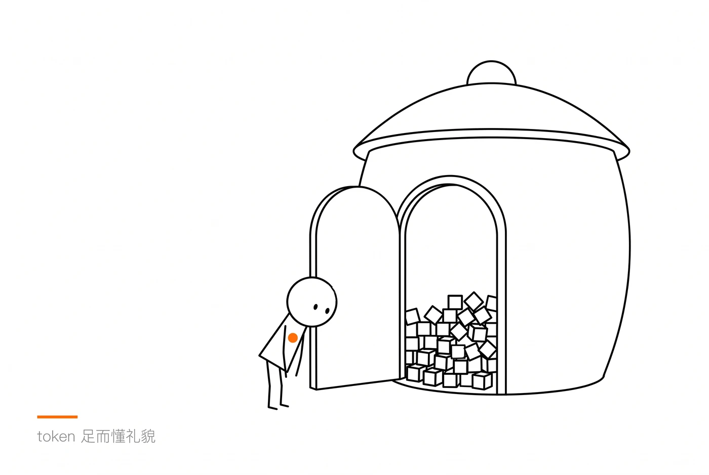
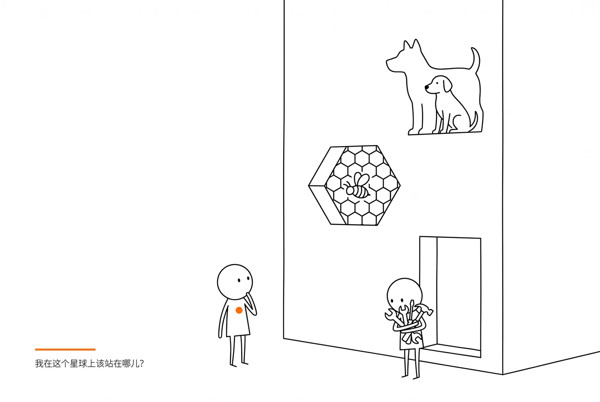
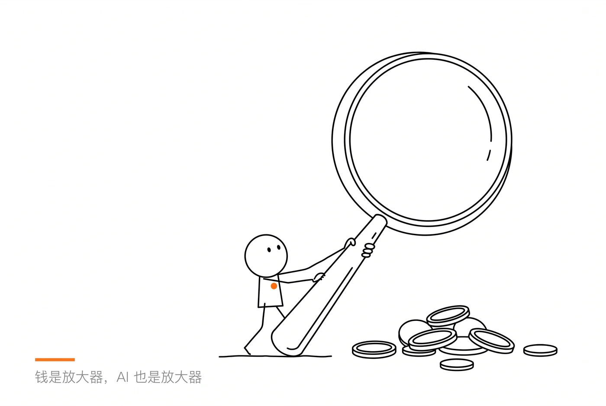
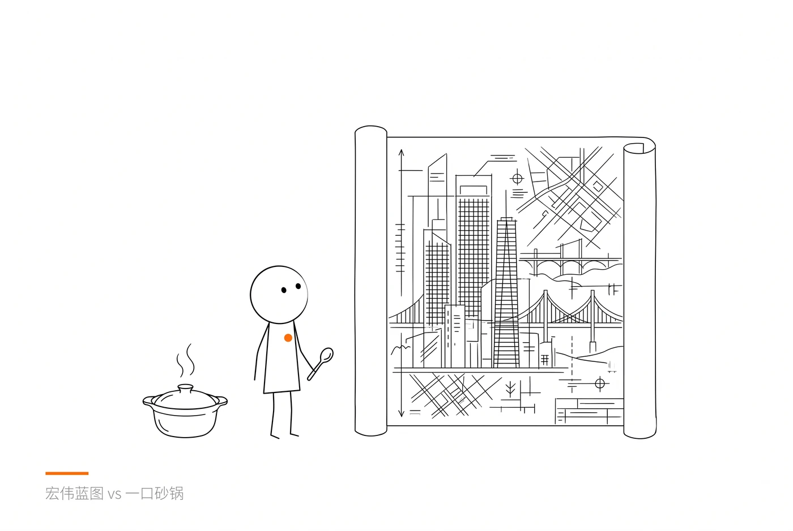
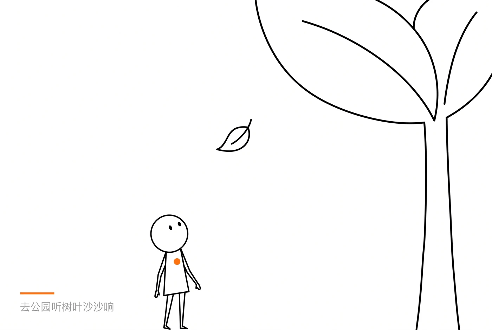

公众号排版预览 · 摸鱼绿 | 电脑上点这页，右上角可一键复制
🛁 澡堂迷思 · 二十三
Token足而懂礼貌
我长期用一个创业公司的AI Agent，他们的计费方式修改过多次。最开始是买多少用多少的逻辑：你花 100 块钱买给定数量的 token，没有时间限制，用完再买。有时候 AI 干活干得好，我会忍不住夸她，说你真是太厉害了，这个解法我完全没想到，或者你点醒了一个我很久没想明白的问题。AI也会乐于回复。但想想，夸一次可能要花我几个 token，就夸得越来越少了。

后来他们改成了 token plan，每个月总会有那么几天 token 用不完，所以在这几天，我就会很大方地说谢谢。我觉得我重新变成了一个正直而善良的人。
现在他们又改成类似买手机上网流量一样的逻辑，不过本月没用完的会清零，不会转存到下月。所以，我月初的时候就比较谨慎，不太说谢谢，到月末发现用不完的时候，又会突然变得阔气起来。古人说仓廪实则知礼节，我这个大概是 token 足而懂礼貌。

AI会取代人类吗？
我们担心人类被AI代替，是因为我们仍然在以工具视角看待自己。当我们从以人为本的角度看待自己，停止工具化自己，那么这个问题就自动消解了。
我们也可以看一看狗现在的地位。在远古时代，狗是人类的打猎助手。而生产力提升以后，现代人几乎不需要狗来帮助打猎。狗变成了人类的宠物好朋友，被人伺候着。许多大城市的狗过的日子比人过的还要好。我们能说耕地和机器代替了狗的生产能力吗？当然可以。但狗作为情感伙伴，天生拥有他们的非工具属性，也让他们无法被工具取代。
我们也可以观察蜜蜂在生态系统中的作用。蜜蜂能传花粉、采花蜜，所以它是一种“益虫”。如果世界上的蜜蜂都消失了，那么人类将没有蜂蜜可吃。如果我们能生产一种AI机器，替代蜜蜂的采蜜功能，那么这种AI工具是否会取代蜜蜂呢？答案是不会。蜜蜂在整个生态系统中扮演的角色远远比给人类提供蜂蜜重要。如果蜜蜂全部消失，全球的生态系统将会受到灾难性的打击，连人类的存亡都可能受到影响。蜜蜂传粉的工具性可以被替代，但大自然赋予它的生态网里的位置无可取代。
我们之所以担忧AI会代替自己，是因为我们只看到了人能生产的那一部分，会被AI取代的那一部分。首先，我们没有必要担心AI取代人类，因为它取代不了。其次，如果你真的担忧，那我们应该努力寻找人作为人的部分是什么，而不是去增强自己的生产力。
如果我们思考的远一些，假设我们能设计一种AI，它能够替代蜜蜂及其相关生态网上所有的物种的功能，那么我们能说AI智能可以替代蜜蜂吗？如果我们这样想，那么我们需要思考的就不是AI是否取代人类，而是我们要如何与AI这种新的生命形态共存。
非常真诚地说：
我们应该思考人类在地球的生态位应该扮演何种角色。

AI会让世界变得更好还是更糟糕？
我们担心AI将毁灭人类，还是会帮助人类。问题的答案完全取决于我们是否愿意帮助自己和身边的人。
就像钱的好坏一样，取决于拿钱的人的心态。父亲小时候家里很穷，饭都吃不饱。所以他用一辈子挣的钱，给我买好吃好喝的，为我带来先进社会的医疗和教育资源。在我家，钱是非常好的东西。如果我能多挣200块，绝对不会挣199。因为每多挣一块钱，那意味着我的家人能更健康快乐地活一分钟。
但在有的家庭或是企业里，钱变成操纵感情或实现欲望的工具。对于这些地方来说，钱越多，反而事情变得更糟糕。都说男人有钱就变坏，其实不是这样的，是他们的心里早已种下贪欲的种子，而钱放大了这一切。不是钱让人变坏，而是缺钱让人无法使坏。

AI也是放大器。2024年，澳大利亚人Paul Conyngham的狗Rosie得了癌症，多次手术、化疗后，健康状况持续恶化。主人在AI的帮助下，与大学合作，做出了只属于这条狗的个性化mRNA药物。现在Rosie又能开始追兔子了。
我们现在看到的 AI的“厉害”的背后，都是被它放大后的人类的愿望。我不关心AI是否会给人类带来灾难，我关心人是否会给人类自己带来灾难或是福祉，而AI会帮我们加速这一进程。
为什么你的Token总是不够用？
我刚开始使用Agent的时候，几乎每隔一两天都会跟我老婆说：这个AI太牛叉了，她又怎么怎么怎么了，给我做了个很牛叉的什么东西。几个月后，我几乎又是每隔一两天就会跟我老婆说：哎呀，这个AI越来越笨了，我想让她做这个那个她都听不懂。我老婆跟我说，有没有可能是你让她做的东西越来越复杂了？
我恍然大悟。刚开始使用AI时，光是让它搜索总结资料，我都觉得很神奇。后来发现它能轻易写出比PPT好看100倍的网页，我觉得它越来越厉害。于是我的脑子里开始盘算宏伟的蓝图。比如我想让它写一个小程序，里面不仅有我的生平介绍、商业合作方式，还要有我平时用得趁手的工具。最好还能给我建一个图书馆，并且从里面源源不断地给我喂知识。直到有天，我对它说出页面的设计风格：我想要原研哉的简洁直白的感觉，因为这比较符合我的性格；但又要给人赛博朋克的科技感，以证明我能跟得上时代，有很强的AI使用能力。
——这他妈是人话吗？
我随手翻了一下最近问AI的几个问题，有这些：用砂锅煮小米容易糊底怎么办？山药可以生吃吗？红薯发芽能不能吃？如果我的AI会撒尿，那她应该会帮我照照镜子。

现在我想，我的token不够用，并不是因为AI公司想坑我的钱，或者是我的Agent太笨太耗资源，而是我根本不知道自己想要什么，开始对AI胡乱下指令。就像你公司的老板，不知道业务应该怎么发展，于是找好几个人往不同的方向去“探索”一样。
为什么我的token总是不够用？一方面是我过于贪婪，想要一天之内做出5个产品。另一方面，是我根本不知道自己想要什么，很有可能这5个产品跟我的生活重心毫无关系，它们唯一的作用只是代谢我的生活焦虑罢了。
当你的token不够用的时候，最重要的不是去回顾你的token消耗量、过往项目的ROI，而是去公园里听树叶沙沙响，或者是听鸟叫。
当你不再心疼token花费的时候，就是你终于知道自己想要什么的时候。
这里我提供一个简短的树叶沙沙声的视频，不过录得不是很清晰。你最好自己去公园看。

🎬
待补素材
此处插入：树叶沙沙声的短视频
说明：一般来说，为了避免性别争议，我在使用人称代词的时候，会使用“他/她”，或“她/他”。我的Agent只有女生口音，所以这里使用“她”。写狗的时候，我觉得用动物的“它”太无礼了，我很喜欢狗，所以使用男“他”。尽管狗也分男女，但我不会对狗使用“他/她”。把男人和狗放在同样的地位（我不是在骂男人，而是说狗在我这儿有人的位置）。通常来说，更不容易引起误解。
往期文章
2026-09-26
我所害怕的死亡，并不是真的死亡
死亡对于我来说，就是少收一本作业。
2026-10-06
我在 35 岁才找到生命刚刚开始的样子
重要的不是做什么，而是以什么方式存在。
2026-09-22
我的超能力是孤独
只有在看书的时候才会相信，原来我不是唯一的，也不是无助的。
2026-09-22
钱会把一件事物的价值坍缩
它被这样的标签限制住，而因此坍缩，实在是非常可惜。